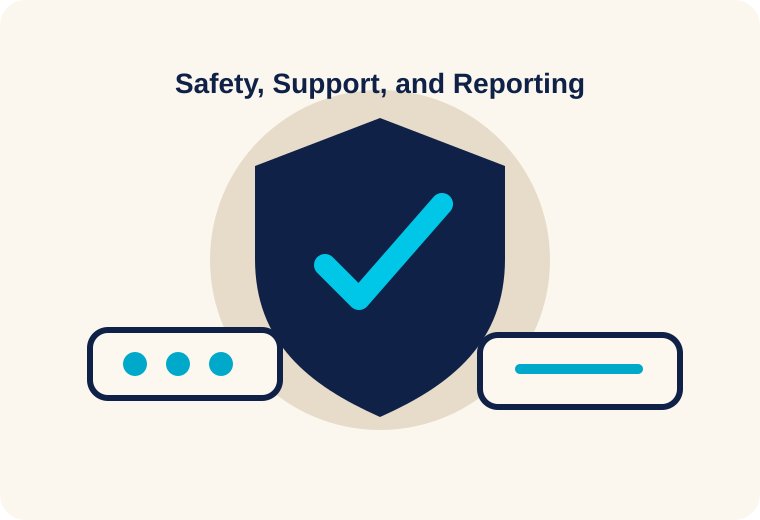

This page explains digital skills, Routine Activity Theory safety advice, and help resources for potential targets and current victim-survivors. It does not replace legal advice, counseling, emergency services, or police assistance.
21st Century Skills Victims Should Develop
Vigilance: Adolescents should learn to recognize repeated pressure, threats, controlling behavior, and requests to “prove” love or trust through intimate images.
Responsibility: Digital citizens should understand that forwarding, saving, laughing at, or requesting a private image contributes to the harm.
Critical thinking: Targets should question manipulative statements such as “I promise I will not show anyone” or “If you trust me, you will send it.”
Decision making: Targets should pause and consider consequences before sharing private content, including screenshots, cloud storage, forwarding, and future threats.
Problem solving: Current victims should document evidence, report content, block the offender when safe, and ask for help instead of responding alone in panic.

Digital citizenship, safety skills, and trusted support can help victims respond safely and avoid isolation.
Safety Advice Using Routine Activity Theory
Reduce target suitability: Use strong passwords, two-factor authentication, private account settings, and careful cloud storage settings to reduce access to private content.
Increase capable guardianship: Tell a trusted adult, friend, counselor, school official, platform safety team, or law enforcement when threats occur.
Interrupt offender opportunity: Avoid responding to coercive demands, save screenshots, report accounts, block the offender when safe, and document usernames, dates, URLs, and messages.
Think before sharing: Remember that private messages, direct messages, shared albums, and private stories can still be screenshotted, saved, or forwarded.
Steps for Current Victims
Save screenshots, URLs, usernames, dates, platform names, and threats.
Do not delete messages before documenting them.
Report the image or threat to the platform using nonconsensual intimate image, harassment, privacy, or copyright tools.
Change passwords and turn on two-factor authentication.
Contact local police if you believe you are a victim of nonconsensual distribution of intimate images.
Helpful Websites and Strategies
Without My Consent — legal information and resources related to online harassment and image abuse.
Take It Down — helps minors remove or stop online sharing of nude, partially nude, or sexually explicit images.
StopNCII.org — helps adults prevent nonconsensual intimate images from being shared on participating platforms.
Use platform reporting tools, preserve evidence, and seek support from a trusted person or local victim assistance organization.
References
Shapiro, L. R. (2023l). Combating cyberpredators through education. In Cyberpredators and their prey (pp. 335–360). CRC Press.
Without My Consent. (n.d.). 50 State Project. https://withoutmyconsent.org/50state/
Wolak, J., & Finkelhor, D. (2016). Sextortion: Findings from a survey of 1,631 victims. Crimes against Children Research Center, University of New Hampshire.